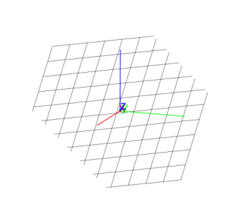

14.6.2 The bisector plane in space: perpen_bisector
See Section 13.7.10 for perpendicular bisectors in the plane.
The perpen_bisector command finds the perpendicular bisector
plane of a line segment.
-
perpen_bisector takes one argument:
seg, a line segment (or the end points of the segment).
- perpen_bisector(seg)
returns and draws the perpendicular bisector plane of seg.
Example
Input:
perpen_bisector(point(0,0,0),point(4,4,4))
or:
perpen_bisector(segment([0,0,0],[4,4,4])
Output:
